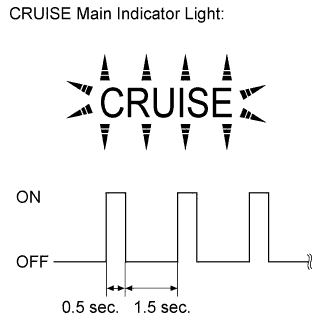

CRUISE CONTROL SYSTEM > DIAGNOSIS SYSTEM |
| CHECK INDICATOR |
Turn the engine switch on (IG).
 |
Check that the CRUISE main indicator light illuminates when the cruise control main switch is turned on, and that the indicator light turns off when the main switch is turned off. If the results are not as specified, inspect the CRUISE main indicator light circuit (Click here).